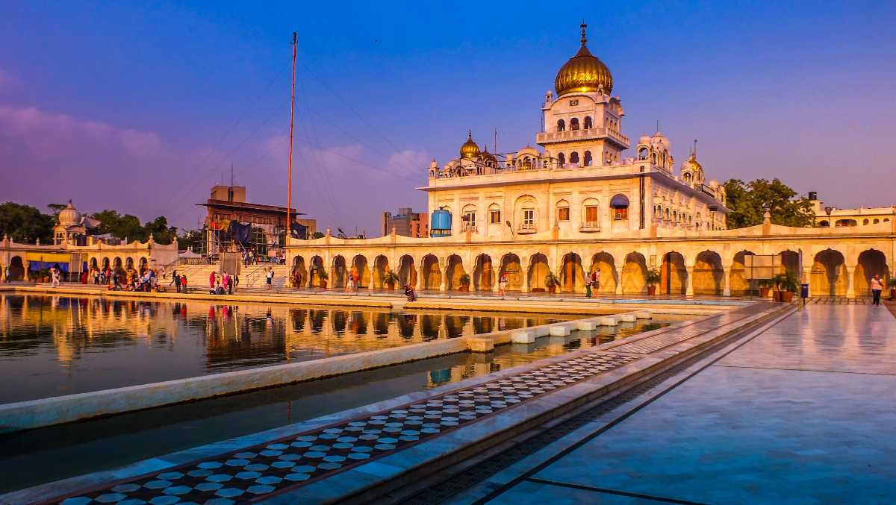
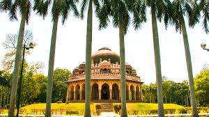

Places to Visit in Delhi
-

Red-Fort -

India Gate -

Jantar-Mantar -
Qutub Minar -

Jama Masjid -

Humayun's Tomb -

Sri Bangla Sahib Gurudwara -

Akshardham Temple -
Humayun's Tomb -
Hauz Khas -

Bahai (Lotus) Temple -
Waste to Wonder Park -
Rashtrapati Bhawan -
Nizamuddin Dargah -

Lodhi Gardens -
Agrasen ki Baoli